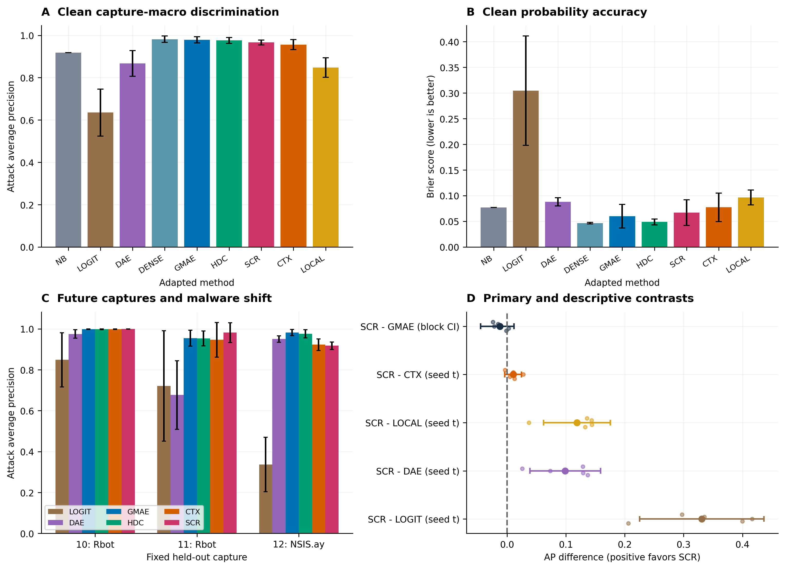
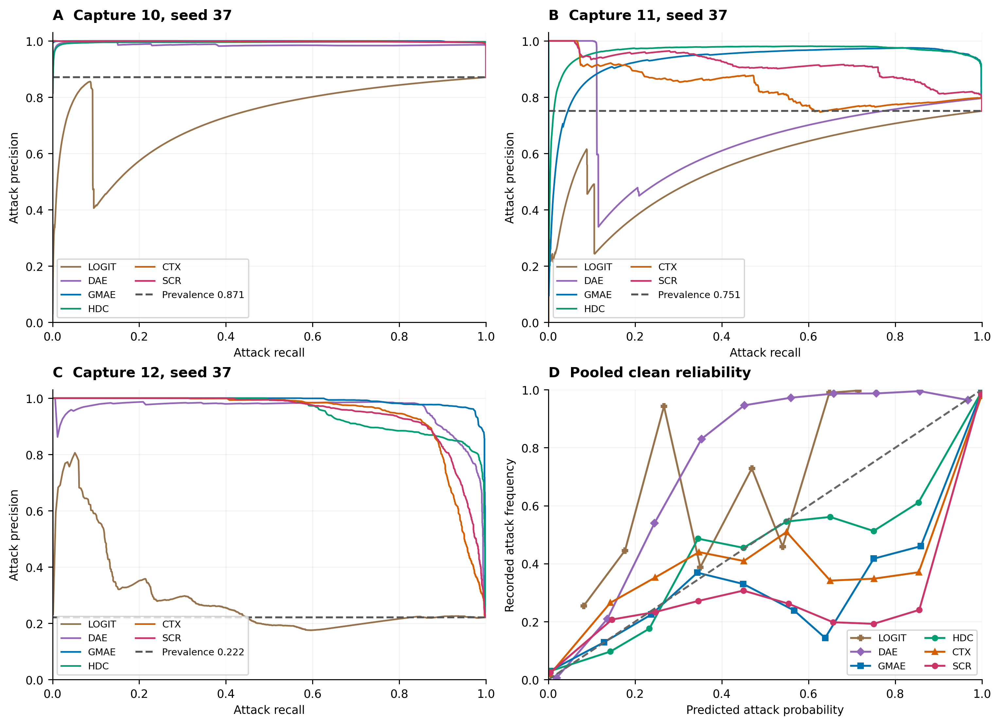
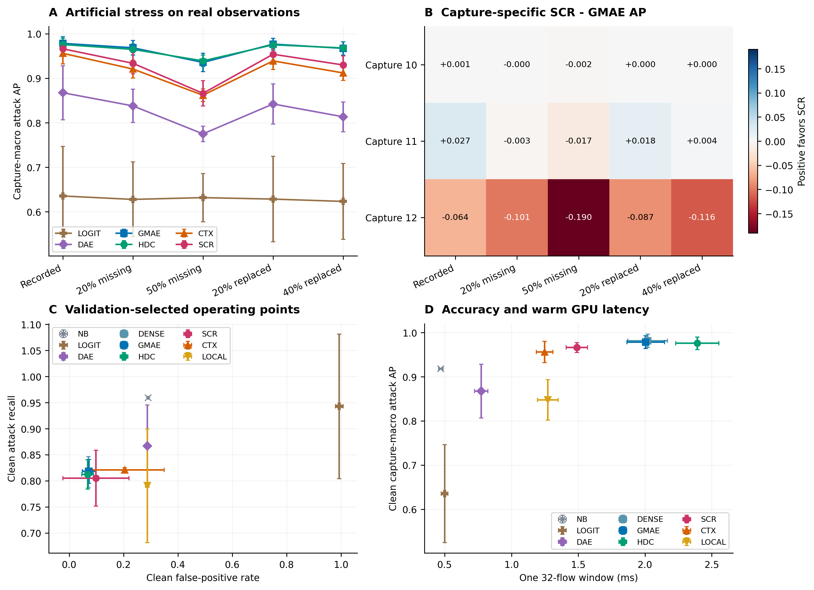
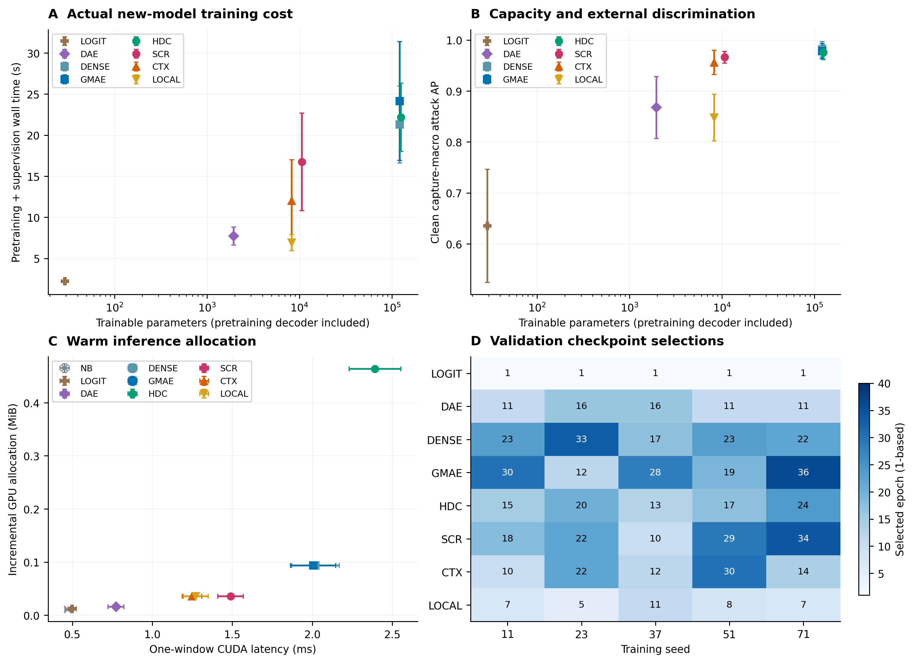
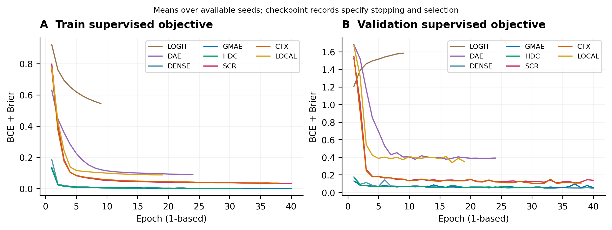
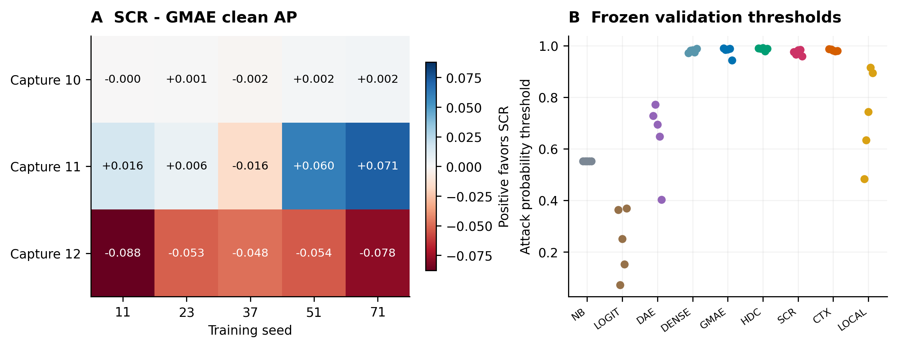

Four empirical main figures and two supplementary diagnostics. Five training seeds share the same three fixed held-out captures. Error bars are conditional seed-t intervals except the explicitly marked primary block-bootstrap interval.
Results and limits · Three-page supplement · Original dataset

Clean recorded telemetry only. A/B give equal-weight capture-macro scores; C separates the three future captures. D distinguishes the primary seed/time-block interval from descriptive seed-t contrasts. IDs map to the method table below.
Vector PDF · Provenance
A-C show seed37 precision-recall curves on the three held-out captures, each with its own attack-prevalence reference. These curves are illustrative, not a confidence interval. D pools clean calibration bins across fixed captures and training seeds; repeated labels are not independent samples.
Vector PDF · Provenance
Missingness and benign-centroid feature replacement are deliberately applied stresses on real captured records. A/B use attack AP. C shows validation-threshold recall/FPR, without selecting thresholds on the test captures. D relates clean accuracy to warmed batch-one-window CUDA inference time.
Vector PDF · Provenance
Actual new-model trainable parameter counts, training wall time, incremental GPU allocation and checkpoint selections. Retained pretraining decoders contribute to checkpoint counts but are inactive during inference. Epoch choices do not prove convergence.
Vector PDF · Provenance
Vector PDF
Vector PDFNB | Gaussian naive Bayes |
LOGIT | Logistic classifier |
DAE | Denoising autoencoder |
DENSE | Dense graph classifier |
GMAE | Masked-pretrained graph classifier |
HDC | HDC-augmented masked graph classifier |
SCR_FLOW | Shared-context mixture |
CTX_FLOW | Single expert with context |
LOCAL_FLOW | Single expert without context |